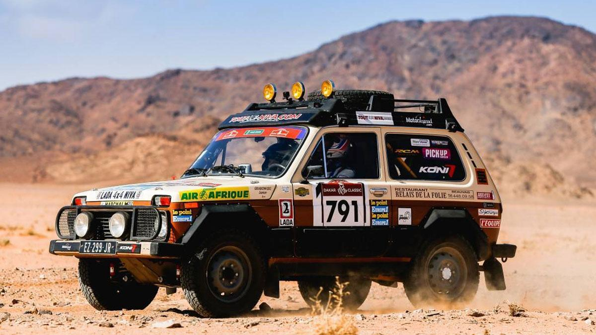
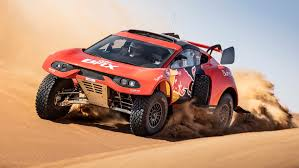
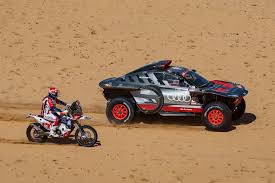
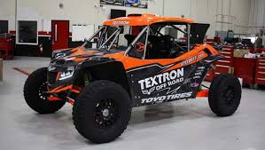

TEl Rally Dakar es la competición de motor
"rally raid" o campo a través más dura
y famosa del mundo
Contenido
Origen y Evolución: Fundado en 1978 por Thierry Sabine
como el "París-Dakar" (Europa-África), el rally se
trasladó a Sudamérica (2009-2019)
y desde 2020 se disputa en Arabia Saudita.Categorías: Se compite en coches, motos,
camiones, quads y la categoría Dakar Classic
para vehículos históricos.



